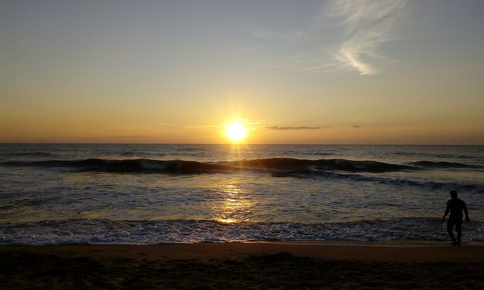
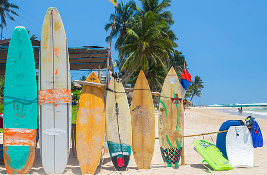
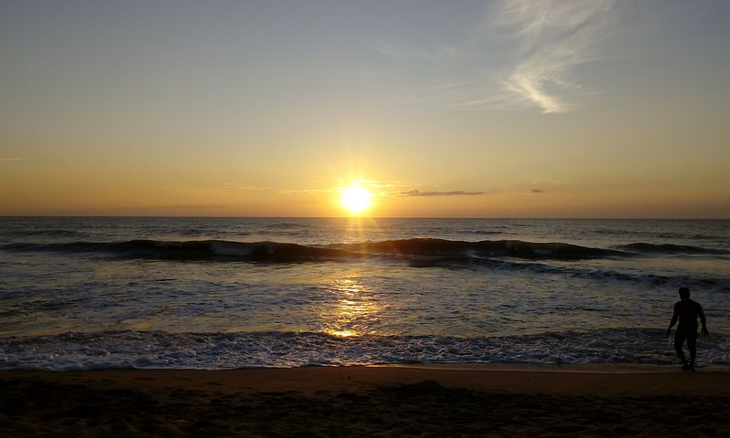
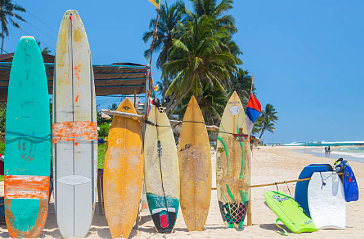
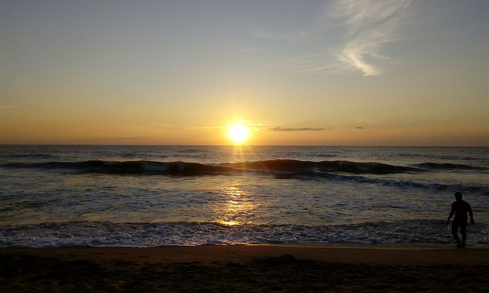
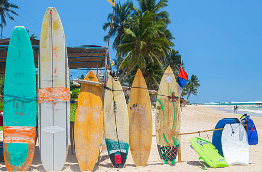
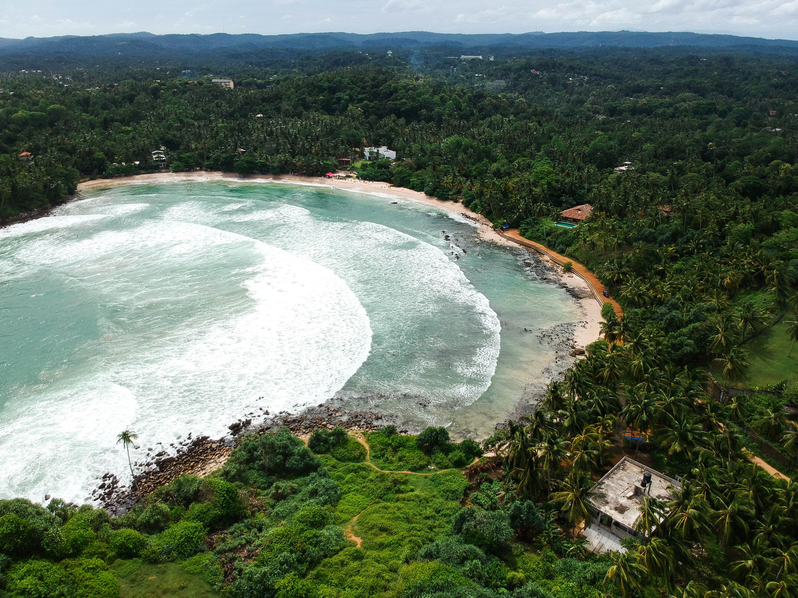

Beach Paradise
 





Arugam Bay
Towards the southern end of the east coast, the village of Arugam Bay is a popular destination with independent travelers drawn by the charms of its beautiful, palm-fringed beach. Surfers originally put the village on the map by visiting to ride what are widely thought to be some of the best waves in Sri Lanka. The beach continues to attract plenty of surfers, but its laid-back vibe and offbeat charm provide wide-ranging appeal. The local community have strongly and successfully resisted the development of major hotels. Plenty of casual lodgings are available in quirky village guesthouses and relaxed beachfront bungalows and cabanas. Tours of nearby Pottuvil Lagoon are easily arranged, as well as motor-boat trips out to sea in search of dolphins.
Hiriketiya
On the south coast, the area around Dikwella is gradually becoming more popular with travelers looking to escape the increasing development further to the west. A string of relatively unspoiled beaches dot the coast here, most notably the stunning little horseshoe bay at Hiriketiya, which is backed by a small selection of great places to stay.
Bentota
One of the finest stretches of sand on the west coast, this beach runs south from magnificent Bentota lagoon and is lined with a string of alluring hotels. The southern end of the beach is home to some of the most appealing upmarket accommodation along this coastline, with a number of chic boutique hotels nestled amongst the palm trees. Bentota is also Sri Lanka's water sports hub. Behind the beach, the calm waters of the lagoon are perfect for kayaking and jet-skiing, while boat trips up the river to explore the mangroves and tangled waterways are easy to arrange.Lying halfway between major destinations such as Colombo and Galle, adding a stop off at Bentota as part of Insight Guides' Sri Lanka Family Adventure trip makes perfect sense.